Amendment #350 (S.O. 1972 (E), 2019)
12 changes: 5 to the First Schedule, 7 to the Second Schedule. 12 applied
What it did to the ministries
- spun offFisheries, Animal Husbandry and Dairying leaves Agriculture. change 1, 3, 6, 9 · histories: Agriculture, Fisheries & Dairying
- absorbedDrinking Water and Sanitation folds into Water Resources… change 2, 4, 5, 7, 11 · histories: Drinking Water and Sanitation, Jal Shakti
- renamed…which is renamed the Ministry of Jal Shakti. change 4, 5, 11 · histories: Jal Shakti
The order, page by page
Page 1 of 11
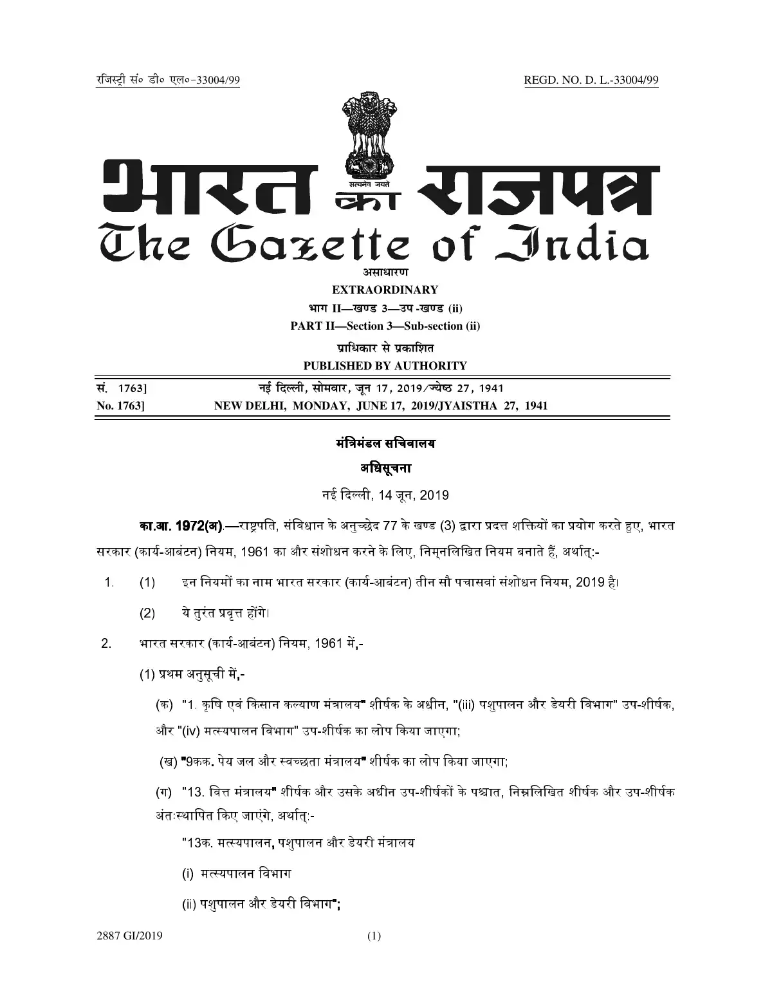
Page 2 of 11
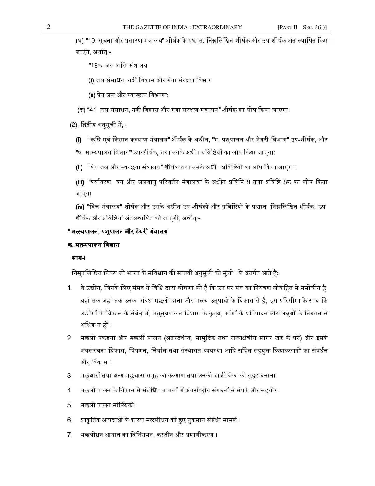
Page 3 of 11
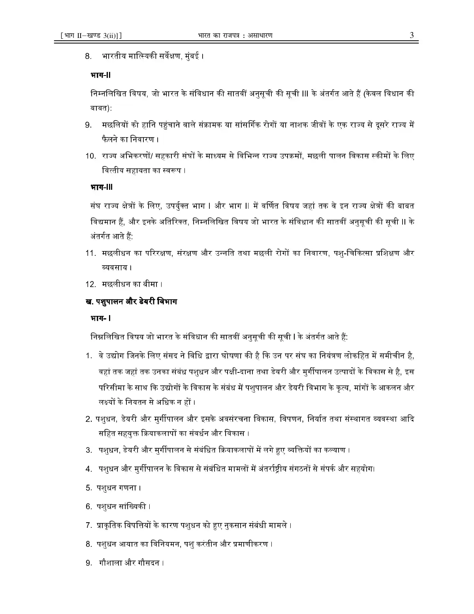
Page 4 of 11
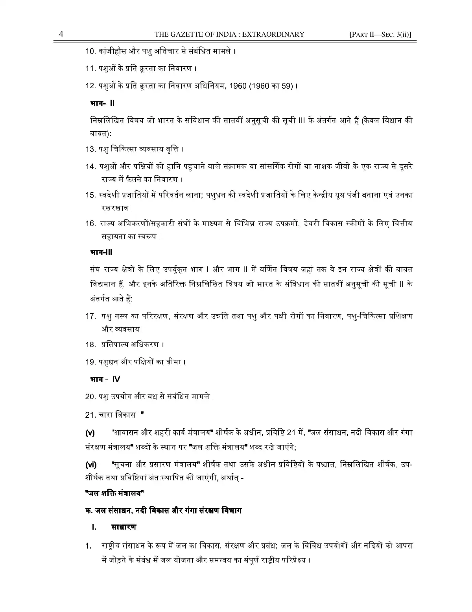
Page 5 of 11
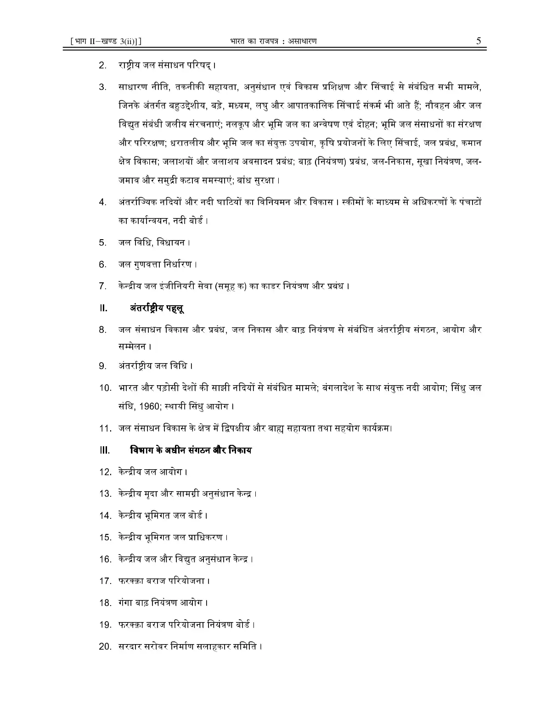
Page 6 of 11
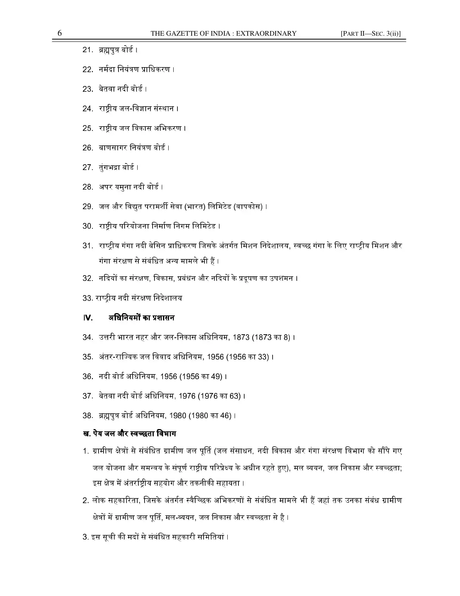
Page 7 of 11
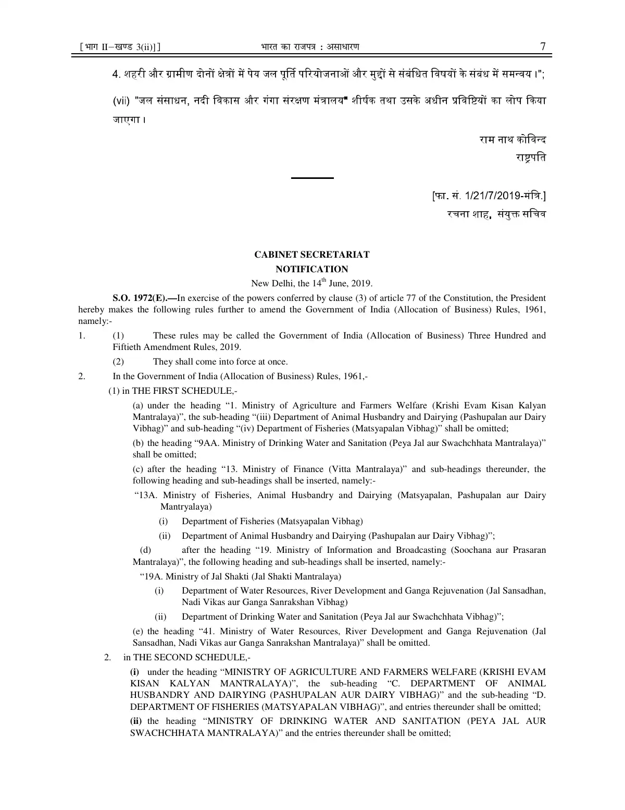
1234567Schedule 1 › Ministry of Agriculture and Farmers Welfare › Department of Animal Husbandry and Dairying; Schedule 1 › Ministry of Agriculture and Farmers Welfare › Department of Fisheries
applied at schedule 1 › ministry 1 › department iii in the Rules after #350
Schedule 1 › Ministry of Drinking Water and Sanitation
applied at schedule 1 › ministry 9AA in the Rules after #350
after Schedule 1 › Ministry of Finance
- 13A. Ministry of Fisheries, Animal Husbandry and Dairying
- i. Department of Fisheries
- ii. Department of Animal Husbandry and Dairying
applied at schedule 1 › ministry 13A in the Rules after #350
after Schedule 1 › Ministry of Information and Broadcasting
- 19A. Ministry of Jal Shakti
- i. Department of Water Resources, River Development and Ganga Rejuvenation
- ii. Department of Drinking Water and Sanitation
applied at schedule 1 › ministry 19A in the Rules after #350
Schedule 1 › Ministry of Water Resources, River Development and Ganga Rejuvenation
applied at schedule 1 › ministry 41 in the Rules after #350
Schedule 2 › MINISTRY OF AGRICULTURE AND FARMERS WELFARE › DEPARTMENT OF ANIMAL HUSBANDRY AND DAIRYING; Schedule 2 › MINISTRY OF AGRICULTURE AND FARMERS WELFARE › DEPARTMENT OF FISHERIES
applied at schedule 2 › ministry MINISTRY OF AGRICULTURE AND FARMERS WELFARE › department C in the Rules after #350
Schedule 2 › MINISTRY OF DRINKING WATER AND SANITATION
applied at schedule 2 › ministry in the Rules after #350
Page 8 of 11
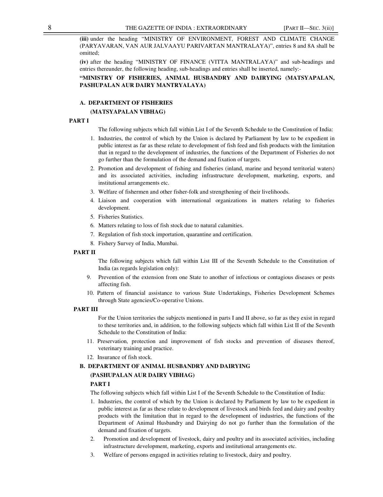
89Schedule 2 › MINISTRY OF ENVIRONMENT, FOREST AND CLIMATE CHANGE › entry 8; Schedule 2 › MINISTRY OF ENVIRONMENT, FOREST AND CLIMATE CHANGE › entry 8A
applied at schedule 2 › ministry MINISTRY OF ENVIRONMENT, FOREST AND CLIMATE CHANGE › entry 8 in the Rules after #350
after Schedule 2 › MINISTRY OF FINANCE
- MINISTRY OF FISHERIES, ANIMAL HUSBANDRY AND DAIRYING
- A. DEPARTMENT OF FISHERIES
- I. PART I
- 1. Industries, the control of which by the Union is declared by Parliament by law to be expedient in public interest as far as these relate to development of fish feed and fish products with the limitation that in regard to the development of industries, the functions of the Department of Fisheries…
- 2. Promotion and development of fishing and fisheries (inland, marine and beyond territorial waters) and its associated activities, including infrastructure development, marketing, exports, and institutional arrangements etc.
- 3. Welfare of fishermen and other fisher-folk and strengthening of their livelihoods.
and 37 more
- 4. Liaison and cooperation with international organizations in matters relating to fisheries development.
- 5. Fisheries Statistics.
- 6. Matters relating to loss of fish stock due to natural calamities.
- 7. Regulation of fish stock importation, quarantine and certification.
- 8. Fishery Survey of India, Mumbai.
- II. PART II
- 9. Prevention of the extension from one State to another of infectious or contagious diseases or pests affecting fish.
- 10. Pattern of financial assistance to various State Undertakings, Fisheries Development Schemes through State agencies/Co-operative Unions.
- III. PART III
- 11. Preservation, protection and improvement of fish stocks and prevention of diseases thereof veterinary training and practice.
- 12. Insurance of fish stock.
- B. DEPARTMENT OF ANIMAL HUSBANDRY AND DAIRYING
- I. PART I
- 1. Industries, the control of which by the Union is declared by Parliament by law to be expedient in public interest as far as these relate to development of livestock and birds feed and dairy and poultry products with the limitation that in regard to the development of industries, the functions of…
- 2. Promotion and development of livestock, dairy and poultry and its associated activities, including infrastructure development, marketing, exports and institutional arrangements etc.
- 3. Welfare of persons engaged in activities relating to livestock, dairy and poultry.
- 4. Liaison and cooperation with international organizations in matters relating to livestock and poultry development.
- 5. Livestock Census.
- 6. Livestock Statistics.
- 7. Matters relating to loss of livestock due to natural calamities.
- 8. Regulation of livestock importation, animal quarantine and certification.
- 9. Gaushalas and Gausadans.
- 10. Matters relating to pounds and cattle trespass.
- 11. Prevention of cruelty to animals.
- 12. The Prevention of Cruelty to Animals Act, 1960 (59 of 1960).
- II. PART II
- 13. Profession of veterinary practice.
- 14. Prevention of the extension from one State to another of infectious or contagious diseases or pests affecting animals and birds.
- 15. Conversion of indigenous breeds; introduction and maintenance of Central Herd Books for indigenous breeds of livestock.
- 16. Pattern of financial assistance to various State Undertakings, Dairy Development Schemes through State agencies/Co-operative Unions.
- III. PART III
- 17. Preservation, protection and improvement of stocks and prevention of diseases of animals and birds, veterinary training and practice.
- 18. Courts of Wards.
- 19. Insurance of livestock and birds.
- IV. PART IV
- 20. Matters relating to cattle utilisation and slaughter.
- 21. Fodder development.
applied at schedule 2 › ministry MINISTRY OF FISHERIES, ANIMAL HUSBANDRY AND DAIRYING in the Rules after #350
read page break
Page 9 of 11
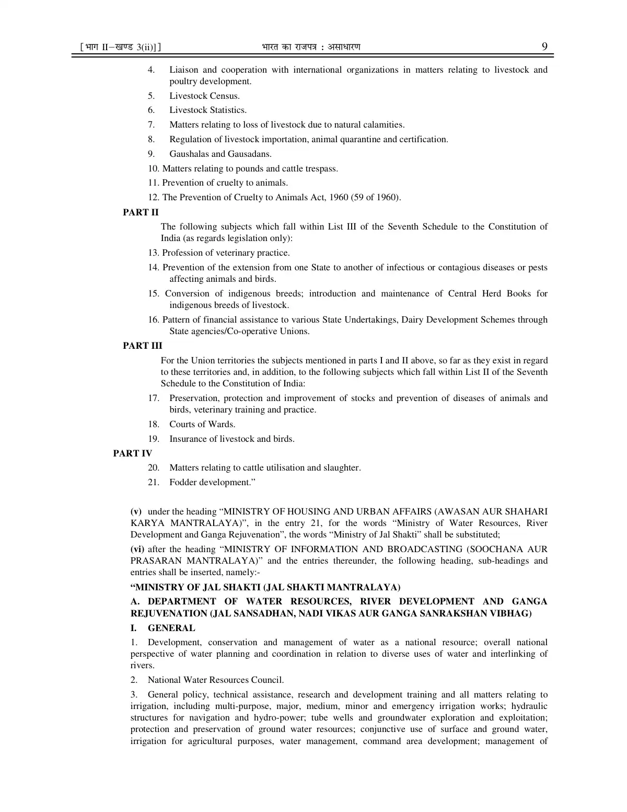
1011Schedule 2 › MINISTRY OF HOUSING AND URBAN AFFAIRS › entry 21
for “Ministry of Water Resources, River Development and Ganga Rejuvenation” read “Ministry of Jal Shakti”
applied at schedule 2 › ministry MINISTRY OF HOUSING AND URBAN AFFAIRS › entry 21 in the Rules after #350
after Schedule 2 › MINISTRY OF INFORMATION AND BROADCASTING
- MINISTRY OF JAL SHAKTI
- A. DEPARTMENT OF WATER RESOURCES, RIVER DEVELOPMENT AND GANGA REJUVENATION
- I. GENERAL
- 1. Development, conservation and management of water as a national resource; overall national perspective of water planning and coordination in relation to diverse uses of water and interlinking of rivers.
- 2. National Water Resources Council.
- 3. General policy, technical assistance, research and development training and all matters relating to irrigation, including multi-purpose, major, medium, minor and emergency irrigation works; hydraulic structures for navigation and hydro-power; tube wells and groundwater exploration and exploitation…
and 43 more
- 4. Regulation and development of inter-State rivers and river valleys. Implementation of Awards of Tribunals through Schemes, River Boards.
- 5. Water laws, legislation.
- 6. Water quality assessment.
- 7. Cadre control and management of the Central Water Engineering Services (Group A).
- II. INTERNATIONAL ASPECTS
- 8. International organisations, commissions and conferences relating to water resources development and management, drainage and flood control.
- 9. International Water Law.
- 10. Matters relating to rivers common to India and neighbouring countries; the Joint Rivers Commission with Bangladesh, the Indus Waters Treaty 1960; the Permanent Indus Commission.
- 11. Bilateral and external assistance and cooperation programmes in the field of water resources development.
- III. ORGANISATIONS AND BODIES UNDER THE DEPARTMENT
- 12. Central Water Commission.
- 13. Central Soil and Materials Research Station.
- 14. Central Groundwater Board.
- 15. Central Ground Water Authority.
- 16. Central Water and Power Research Station.
- 17. Farakka Barrage Project.
- 18. Ganga Flood Control Commission.
- 19. Farakka Barrage Project Control Board.
- 20. Sardar Sarovar Construction Advisory Committee.
- 21. Brahmaputra Board.
- 22. Narmada Control Authority.
- 23. Betwa River Board.
- 24. National Institute of Hydrology.
- 25. National Water Development Agency.
- 26. Bansagar Control Board.
- 27. Tungabhadra Board.
- 28. Upper Yamuna River Board.
- 29. Water and Power Consultancy Services (India) Ltd. (WAPCOS).
- 30. National Projects Construction Corporation Limited.
- 31. National Ganga River Basin Authority including the Mission Directorate, National Mission for Clean Ganga and other related matters of Ganga Rejuvenation.
- 32. Conservation, development, management and abatement of pollution of rivers.
- 33. National River Conservation Directorate.
- IV. ADMINISTRATION OF ACTS
- 34. The Northern India Canal and Drainage Act, 1873 (8 of 1873).
- 35. The Inter-State River Water Disputes Act, 1956 (33 of 1956).
- 36. The River Boards Act, 1956 (49 of 1956).
- 37. The Betwa River Board Act, 1976 (63 of 1976).
- 38. The Brahmaputra Board Act, 1980 (46 of 1980).
- B. DEPARTMENT OF DRINKING WATER AND SANITATION
- 1. Rural water supply (subject to overall national perspective of water planning and coordination assigned to the Department of Water Resources, River Development and Ganga Rejuvenation), sewage, drainage and sanitation relating to rural areas; International cooperation and technical assistance in…
- 2. Public cooperation, including matters relating to voluntary agencies in so far as they relate to rural water supply, sewage, drainage and sanitation in rural areas.
- 3. Co-operatives relatable to the items in this list.
- 4. Coordination with respect to matters relating to drinking water supply projects and issues which cover both urban and rural areas.
applied at schedule 2 › ministry MINISTRY OF JAL SHAKTI in the Rules after #350
read page break
Page 10 of 11
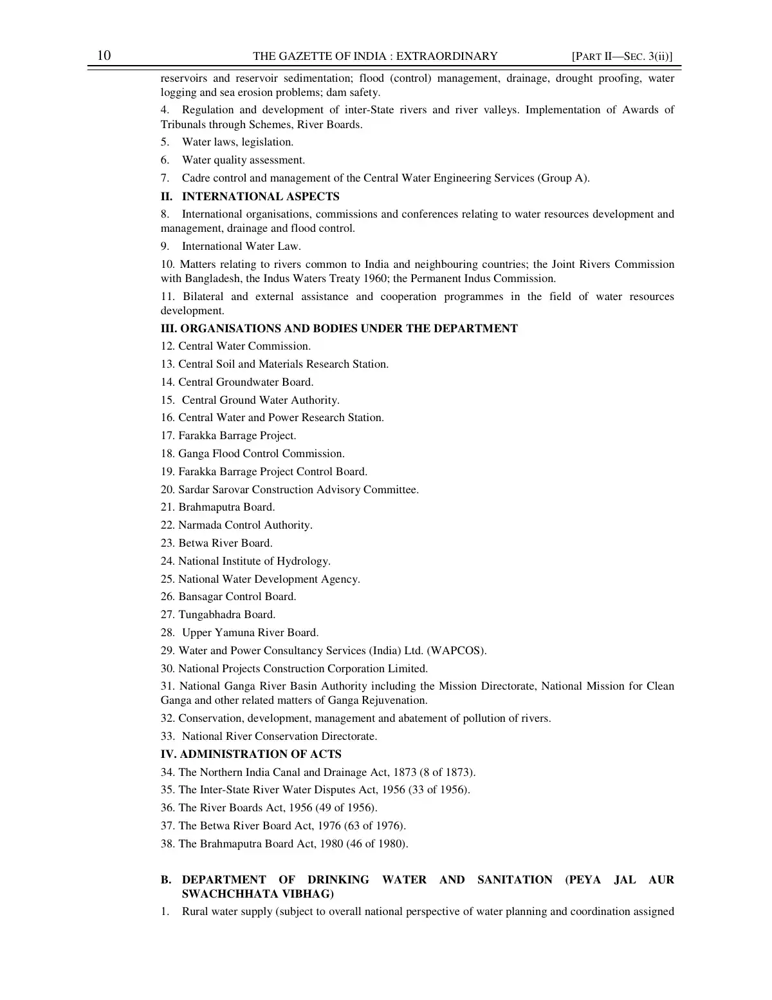
Page 11 of 11
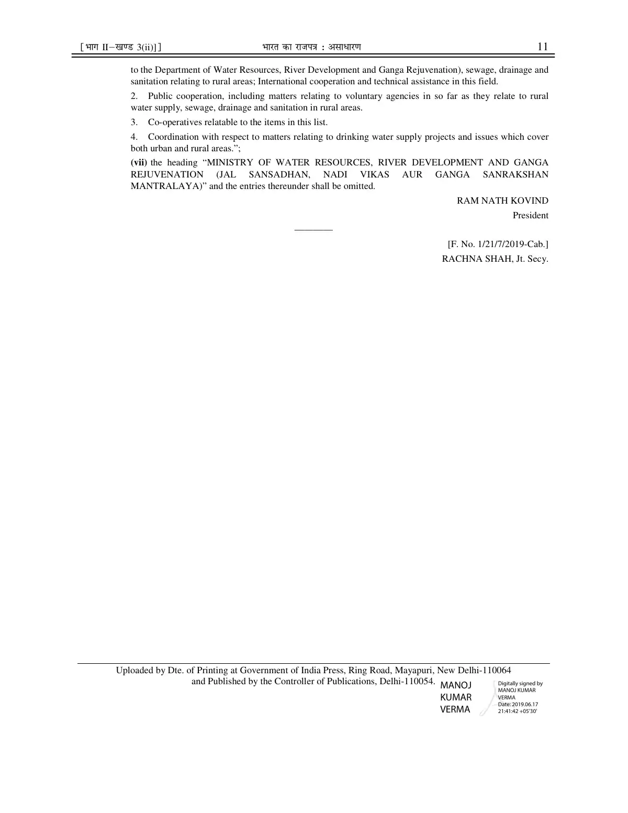
12Schedule 2 › MINISTRY OF WATER RESOURCES, RIVER DEVELOPMENT AND GANGA REJUVENATION
applied at schedule 2 › ministry in the Rules after #350
How this document was read
From the Government of India (Allocation of Business) Rules, 1961 and their amendments, as published by the Cabinet Secretariat (cabsec.gov.in), read by orgpedia. The readings of the older scanned gazettes have known gaps.